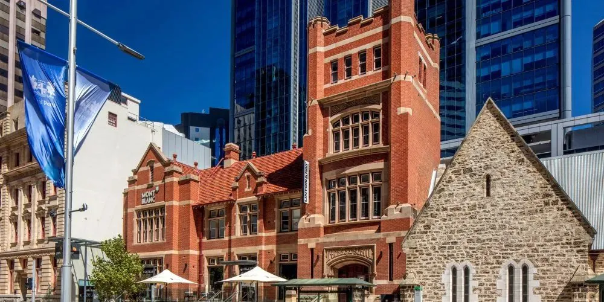
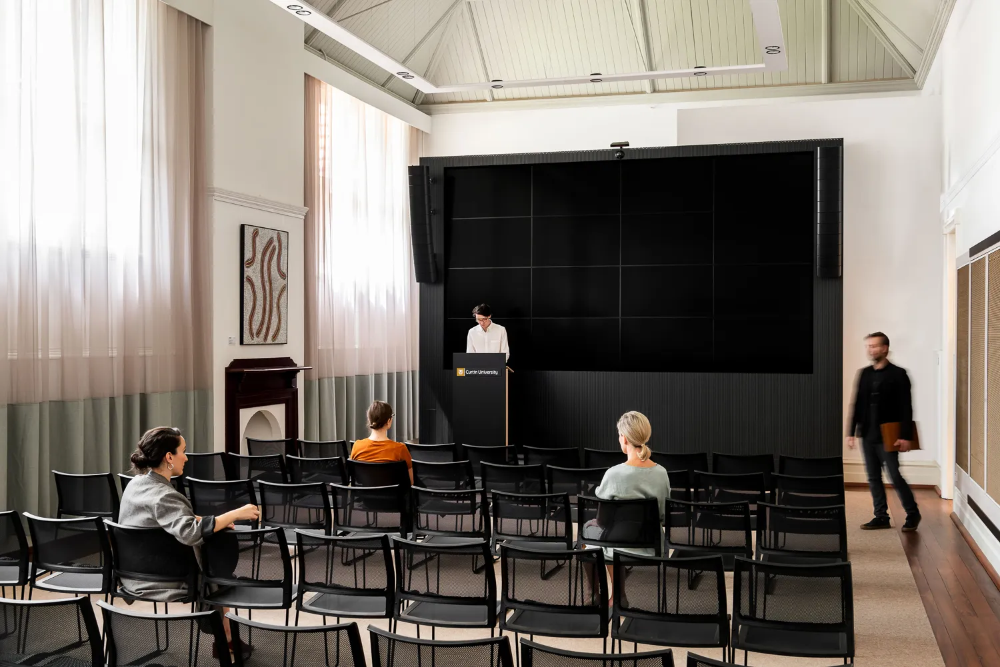

Venue




About the Venue
Curtin 137 St Georges Terrace is a modern facility located in Perth’s central business district, designed for education, collaboration, and industry engagement.
Its prime location offers excellent accessibility to transport, business hubs, and city attractions, making it an ideal workshop venue.
Address: 137 St Georges Terrace, Perth WA 6000
Getting There
🚆 Train and Bus
Curtin 137 St Georges Terrace is a short walk from Elizabeth Quay train station and bus station. Several buses stop directly outside the building:
24, 27, 32, 33, 72, 177, 910, 930, 935
🚗 By Car
The venue does not have dedicated parking. Nearby public car parks include: